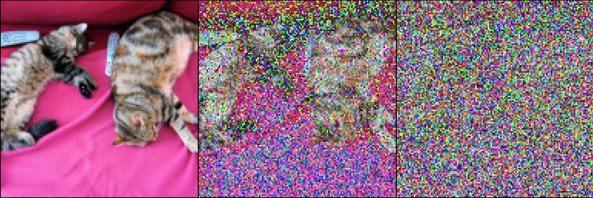
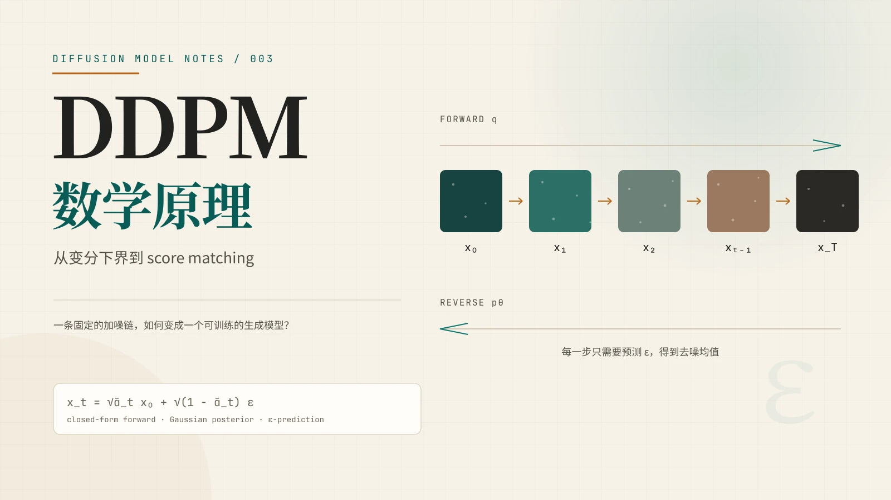
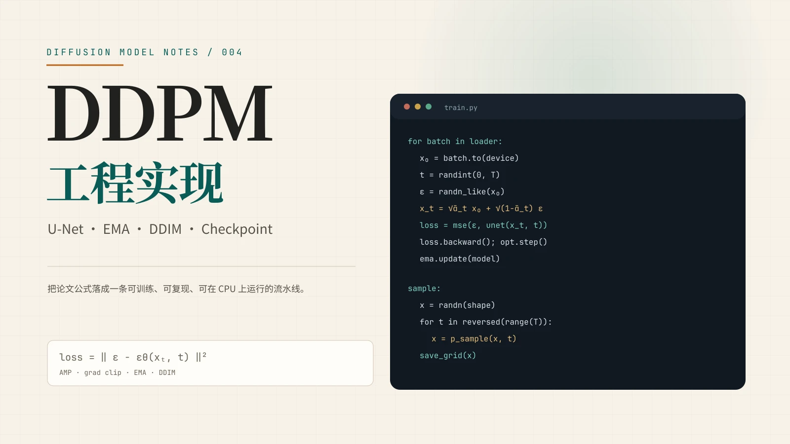

001 Blog 精读
Hugging Face Blog
2022
图解扩散模型
The Annotated Diffusion Model
从 DDPM 的直觉出发，把前向加噪、目标函数、U-Net 与 PyTorch 实现串成一条线；适合作为读原始论文之前的第一站。
10 章 · 11 图 · 125 式
阅读
Library / 论文库
每篇论文或笔记都尽量保留结构、公式编号与图表，并在需要的地方补上中文语境下的解释。
5 篇论文 篇论文

001 Blog 精读The Annotated Diffusion Model
从 DDPM 的直觉出发，把前向加噪、目标函数、U-Net 与 PyTorch 实现串成一条线；适合作为读原始论文之前的第一站。
Denoising Diffusion Probabilistic Models
扩散模型真正的起点：用变分推断训练一条去噪马尔可夫链。完整保留原文的公式编号、算法与实验表格，并把关键推导讲清楚。

003 原理长文The Mathematics of Denoising Diffusion Probabilistic Models
不跳步地拆开 DDPM：前向高斯链、后验配方、ELBO 的三项分解、ε-预测与 score matching 的等价关系，以及逆向采样的概率含义。

004 工程笔记Engineering a Denoising Diffusion Probabilistic Model
结合 code/DDPM 的实现，拆解 U-Net 结构、时间嵌入、权重标准化、注意力、EMA、梯度裁剪、混合精度、DDIM 与检查点设计。
Score-Based Generative Modeling through Stochastic Differential Equations
不止生成：从 DDPM 到连续 SDE，score 如何统一扩散模型，并打开可控生成、逆问题、似然与表征。正文精译 + 框架导读。
没有找到匹配的论文
换一个关键词，或点击“全部”查看完整论文库。
About / 关于
页面不是一次性写死的长文，而是由共享的排版系统、逐篇的原文／元数据与一个小型构建脚本组成。新增一篇论文，只需要新建目录、放入图片与正文，再运行一次构建。
内容重点放在 score-based diffusion / SDE：除了图像生成，也覆盖条件采样、逆问题、似然与表征。
视觉上沿用暖纸张、中文衬线标题与青绿主色的编辑风格；技术上保持零前端框架、零外部依赖，双击 HTML 即可离线阅读。
content.md，公式用 LaTeX，构建时预渲染为 KaTeX。paper.json 自动收录，支持按关键词与标签筛选。